Übersicht:
Physikalische Größen Volumen Masse Dichte Geschwindigkeit Schallgeschwindigkeit Beschleunigng Fallbeschleunigung Kraft Radialkraft Reibungskraft Normalkraft Druck Zentrifugalkraft Gravitationskraft Auftriebskraft Strömungswiderstand Impuls mechanische Arbeit mechanische Energie mechanische Leistung Wirkungsgrad Wellenlänge Lautstärke Frequenz Aufbau der Stoffe aus Teilchen Teilchenmodel Diffusion Kohäsion und Adhäsion Aggregatszustände Bewegung von Körpern Bezugssysteme/-Körper Model Massepunkt Formen von Bewegungen Arten von Bewegungen Überlagerung von Bewegungen Kräfte und ihre Wirkungen Wirkungen von Kräften newtonsche Gesetze Schwerpunkt von Körpern Standfestigkeit von Körpern Überlagerung von Kräften Kraftumformende Einrichtungen Hebel geneigte Ebenen Rollen goldene Regel der Mechanik mechanische Schwingungen und Wellen Schwingungen Resonanz Federschwinger und Fadenpendel Wellen Schall Echolot Mechanik der Flüssigkeiten und Gase hydraulische Anlagen Schweredruck in Flüssigkeiten strömende Flüssigkeiten und GasePhysikalische Größen
Volumen(V):
Einheiten:
Liter(l), Kubikmeter(m³), Kubikzentimeter(cm³)...
Umrechnungen:
1m³ = 1000l
1cm³ = 1ml
Messen:
flüssige, gasförmige Stoffe: Durchflusszähler
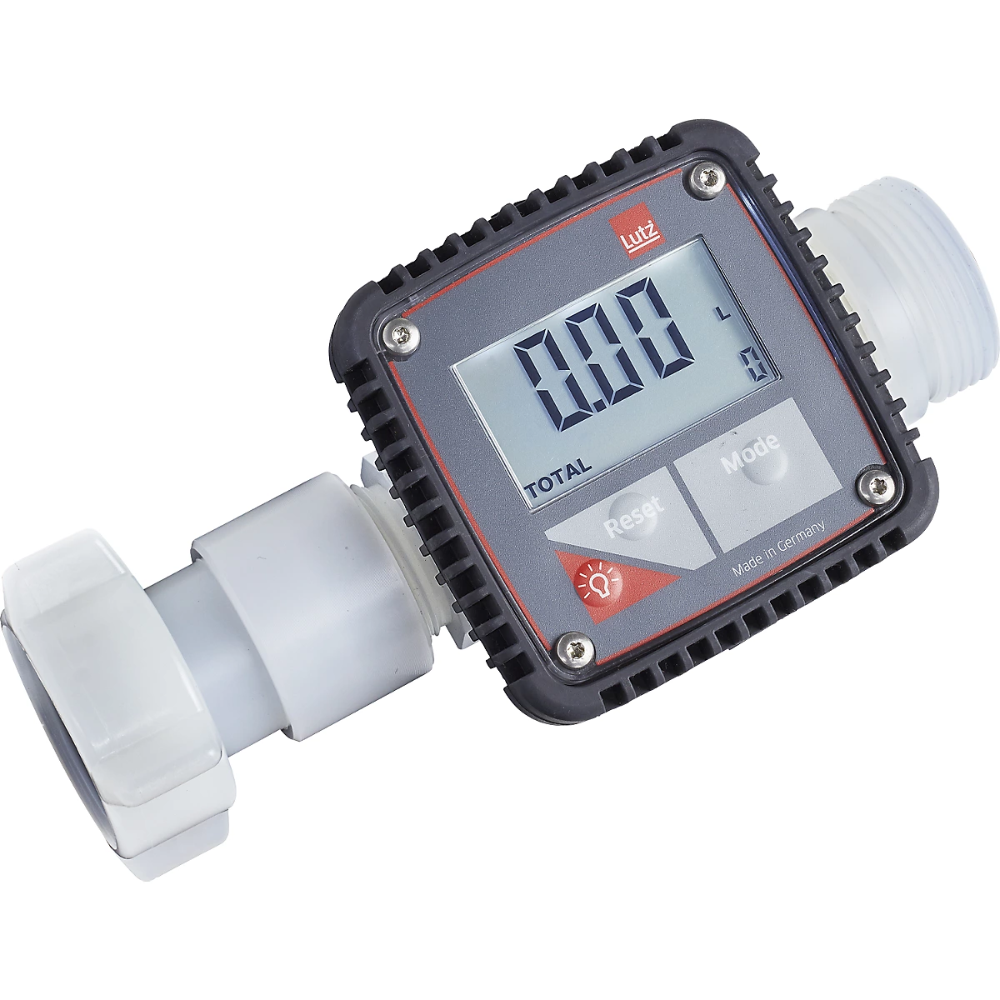pulverförmige Stoffe: Messzylinder
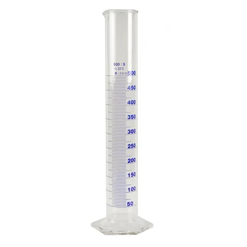unregelmäßig geformte, feste Stoffe: Überlaufmethode oder Differenzmethode
 oder
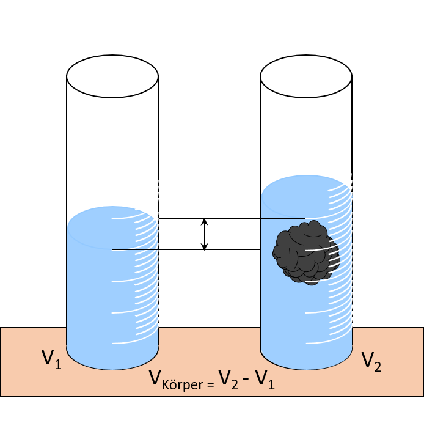
oder
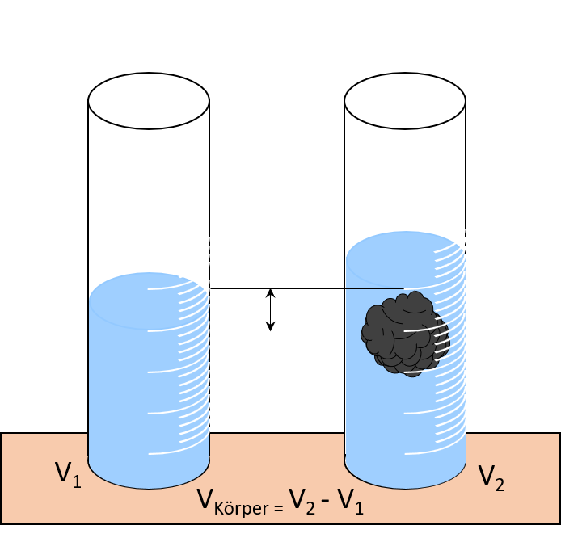
Masse(m)
Eihneiten:
g(Gramm), kg(Kilogramm)...
Messen:
mit jeder beliebigen Art von Waage(Küchenwaage, Federwaage, Balkenwaage...)
 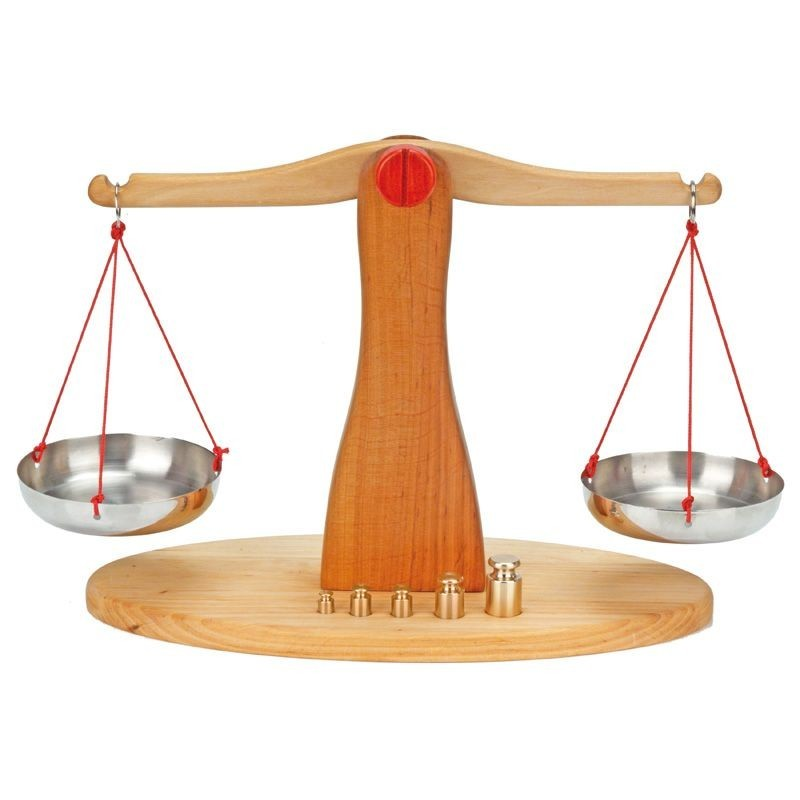
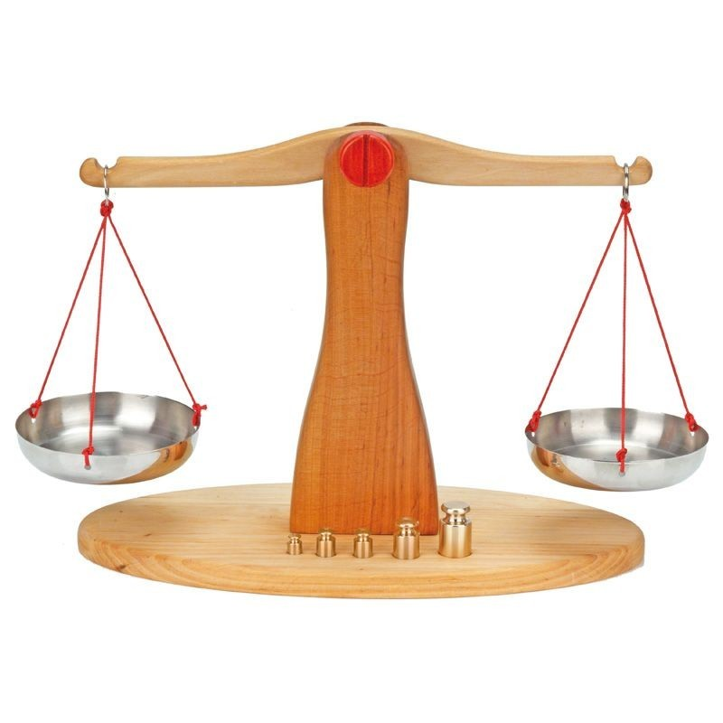
Dichte(ϱ)
Einheiten:
g/cm³(Gramm pro Kubikzentimeter), kg/m³(Kilogramm pro Kubikmeter)
Messen:
mit Dichtemessern(Aräometer)

Berechnen:
ϱ = m/V
Geschwindigkeit(v)
Einheiten:
m/s(Meter pro Sekunde), km/h(Kilometer pro Stunde)...
Messen:
mit einem Geschwindigkeitsmesser(Tachometer)
Berechnen:
v = s/t
(s = zurückgelegter Weg, t = benötigte Zeit, v = Durchschnittsgeschwindigkeit)
Die Geschwindigkeit ist eine gerichtete(vektorielle) Größe. Sie hat eine Richtung und einen Betrag.
Schallgeschwindigkeit(v)
Die Schallgeschwindigkeit gibt an, wie schnell sich der Schall ausbreitet.
Berechnen:
v = λ * f
Beschleunigung(a)
Einheiten:
m/s²(Meter pro Quadratsekunde), km/s²(Kilometer pro Quadratsekunde)...
Berechnen:
a = v/t
(v = Änderung der Geschwindigkeit, t = Zeitintervall)
Ein Körper besitzt eine Beschleunigung von 1 m/s², wenn sich seine Geschwindigkeit mit jeder neuen Sekunde um 1 m/s ändert.
Fallbeschleunigung(g)
Die Fallbeschleunigung ist die Beschleunigung eines frei fallenden Körpers. Auf der Erde beträgt sie im Durchschnitt etwa 9,81 m/s² und auf der Sonne etwa 274 m/s². Sie ist an jedem Ort anders(Ortsfaktor).
Gesetze für den freien Fall:
Weg-Zeit-Gesetz: s = g/2 * t²
Geschwindigkeit-Zeit-Gesetz: v = g * t
Geschwindigkeit-Weg-Gesetz: v = √2 * g * s
Kraft(F)
Einheiten:
N(Newton), MN(Meganewton)...
Die Kraft ist, wie die Geschwindigkeit, eine gerichtete(vektorielle) Größe mit einer Richtung, einem Angriffspunkt und einem Betrag. Sie wird mithilfe von Pfeilen daargestellt.
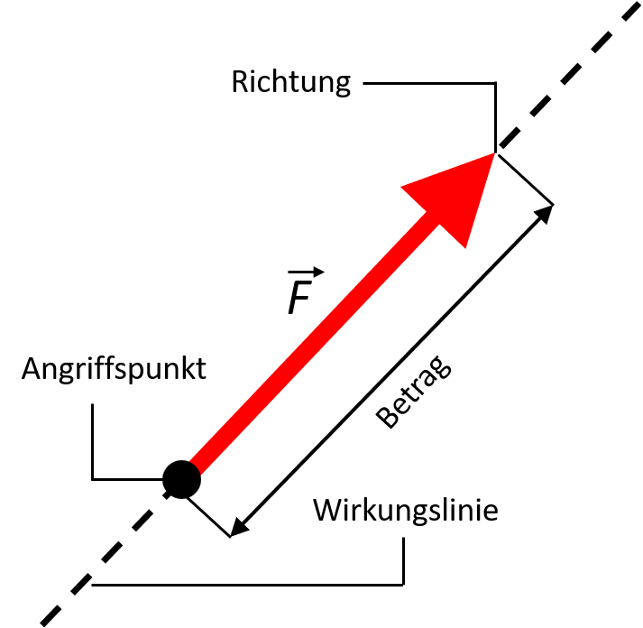Kräfte wirken immer auf mindestens zwei Körper gleichzeitig. Daher ist die Kraft eine Wechselwirkungsgröße.
Ein Newton ist die Kraft, die einem Körper mit der Masse 1kg eine Beschleunigung von 1 m/s² erteilt.
Arten von Kräften:
| Kraft | Beispiel |
|---|---|
|
Magnetische Kraft |
Ein Elektromagnet zieht Körper aus Eisen an. Zwischen Magnet und Eisenkörper wirken magnetische Kräfte. |
|
Elektrische Kraft |
Ein Kamm wird durch Reibung elektrisch geladen. Zwischen Kamm und Styroporkugeln wirken elektrische Kräfte. |
|
Gravitationskraft |
Zwischen der Erde und einem Erdsatelliten wirken aufgrund der Massen anziehende Kräfte, die Gravitationskräfte. |
|
Gewichtskraft |
Jeder Körper wird von der Erde angezogen und übt auf seine Unterlage eine Kraft aus, die man Gewichtskraft nennt: FG = m * g. |
|
Reibungskraft |
Beim Fahren mit dem Fahrrad wirken immer auch Kräfte, die die Bewegung hemmen. Sie heißen Reibungskräfte. |
|
Zugkraft |
Waggons werden durch eine Lokomotive in Bewegung gesetzt. Dabei wirken auf die Waggons Zugkräfte. |
|
Auftriebskraft |
Auf Körper in Flüssigkeiten und Gasen wirkt entgegengesetzt zur Gewichtskraft eine volumenabhängige Auftriebskraft. |
|
Druckkraft |
Durch den Luftdruck im Reifen wirkt auf seine Innenfläche eine Kraft, die ihn "in Form hält" und die man Druckkraft nennt. |
|
Schubkraft |
Beim Start einer Rakete werden Verbrennungsgase sehr schnell ausgestoßen. Auf die Rakete wirkt eine Schubkraft. |
Messen:
mit einem Federkraftmesser
Hooksches Gesetz: Unter der Bedingung, dass eine Feder elastisch verformt wird gilt:
F ~ s
F/s = konstant
F = D * s
(D = Federkonstante)
Radialkraft(Fr)
Die Radialkraft ist die Kraft, die einen Körper, welcher sich auf einer Kreisbahn bewegt, in Richtung des Zentrums seiner Bahn zieht.
Bei gleichförmiger Bewegung gilt:
Fr = m * v²/r
Fr = m * (4 * π² * r)/T²
Fr = m * 4 * π² * r * n²
(m = Masse, v = Geschwindigkeit, r = Radius der Kreisbahn, T = Umlaufzeit, n = Drehzahl)
Reibungskraft(FR)
Arten:
Haftreibung(Ein Körper haftet an einem Anderen und bewegt sich nicht.)
Gleitreibung(Ein Körper "schleift" über einen anderen Körper)
Rollreibung(Ein Körper rollt auf einem Anderen.)
Es gilt bei gleichen Bedingungen: Haftreibung > Gleitreibung > Rollreibung
Berechnen:
FR = μ * FN
(μ(Mü) = Reibungszahl, FN = Normalkraft)
Normal- bzw. Anpresskraft(FN)
Die Normalkraft, oder auch Anpresskraft genannt, ist die Kraft, welche senkrecht auf ihre Unterlage wirkt.
Drehmoment(M)
Einheiten:
Nm(Newtonmeter), MNm(Meganewtonmeter)...
Das Drehmoment beschreibt die Wirkung einer Kraft auf einen drehbar gelagerten Körper.

Berechnen:
M = r * F
Messen:
mit einem Drehmomentschlüssel

Druck(ùëù)
Einheiten:
Pa(Pascal), kPa(Kilopascal), N/m²(Newton pro Quadratmeter), bar(Bar), Torr(Torr), at(Atmosphäre)...
Umrechnungen:
1Pa = 1 N/m² = 0,0001 N/cm²
1bar = 100000Pa
1at = 98,1Pa
1Torr = 133,32Pa
Berechnen:
p = F/A
(F = wirkende Kraft, A = Auflagefläche)
Messen(von Druck in Flüssigkeiten):
| Manometer(Druck in einem geschlossenen System) | Barometer(Luftdruck) |
|---|---|
U-Rohr-Manometer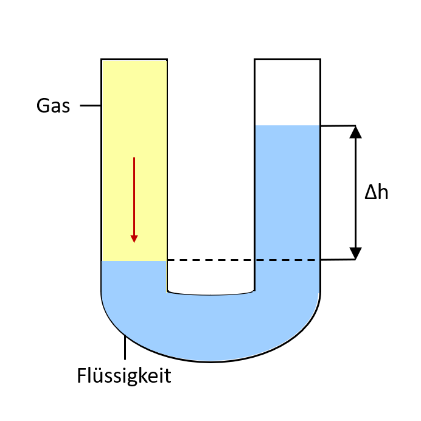Der von der Flüssigkeitssäule der Höhe h ausgeübte Druck ist gleich mit dem Gasdruck. |
Dosenbarometer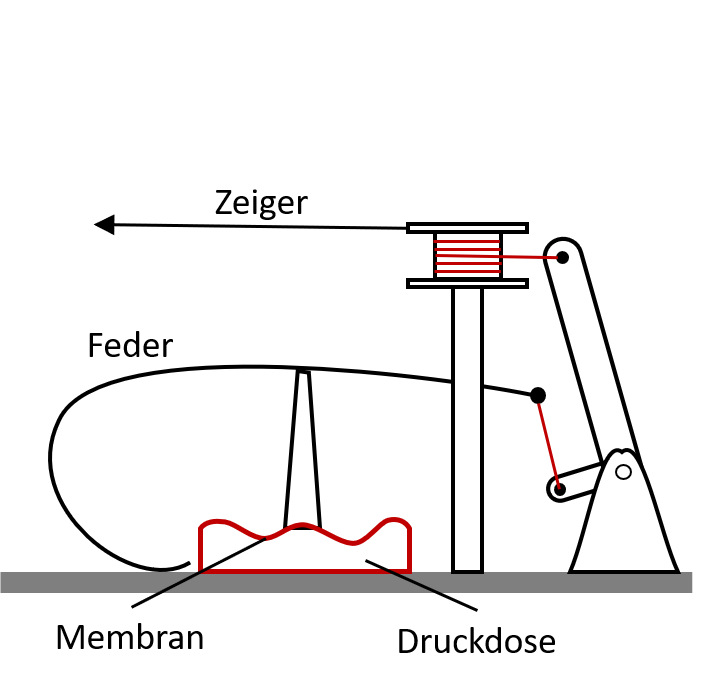Der Luftdruck wirkt auf die Membran einer Luftleeren Dose. Die Verformung der Membran ist ein Maß für den Luftdruck. |
Membranmanometer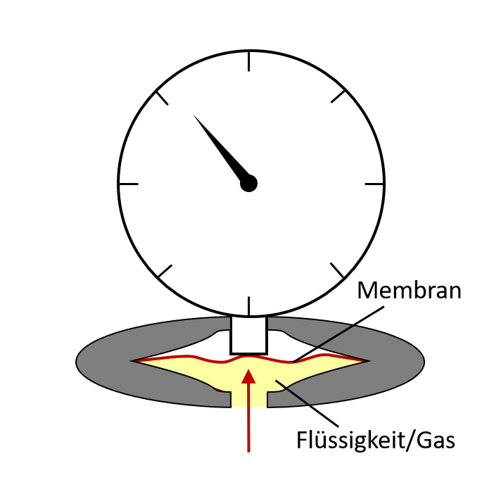Durch den Druck wird die Membran verformt. Damit erfolgt ein Zeigerausschlag. |
Quecksilberbarometer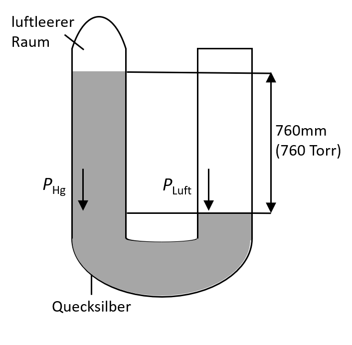Das Quecksilberbarometer ist ein einseitig geschlossenes U-Rohr-Manometer. Der normale Luftdruck entspricht dem Druck einer Quecksilbersäule mit einer Höhe von 760mm |
In einem abgeschlossenem Gefäß ist der Druck an jeder Stelle näherungsweise konstant.
Zentrifugalkraft bzw. Fliehkraft
Die Zentrifugalkraft ist die Kraft, welche einen sich auf einer Kreisbahn bewegenden Körper aus der Bahn nach außen drückt und somit der Radialkraft und der Gravitation entgegenwirkt.
Sie ist abhängig von der Geschwindigkeit des Körpers auf der Kreisbahn.
Wenn sie größer ist, als die Gravitationskraft, bewegt sich der Körper immer weiter aus der Kreisbahn hinaus.
Wenn sie gleichgroß ist, wie die Gravitationskraft, bewegt sich der Körper gleichmäßig auf seiner Kreisbahn weiter.
Wenn sie kleiner ist, als die Gravitationskraft, fällt der Körper in Richtung des Zentrums seiner Bahn.
Gravitationskraft
Die Gravitationskraft ist gleich mit der Gewichtskraft.
Außerdem ist sie eine Wechselwirkungskraft. Das heißt, dass sich mehrere Körper immer mit der exakt selben Kraft gegenseitig anziehen.
Berechnen:
F = G * (m1 * m2)/r²
(F = Gravitationskraft; G = Gravitationskonstante = 6,67430 * 10⁻¹¹ * m³ * kg⁻¹ * s⁻²; m1, m2 = Massen der zwei Körper; r = Abstand der Massenmittelpunkte)
Auftriebskraft(FA)
Einheiten:
N(Newton), MN(Meganewton)...
Berechnen:
FA = ϱ * V * g
(ϱ = Dichte des verdr√§ngten Stoffs, V = verdr√§ngtes Volumen, g = Fallbeschleunigung)
Sinken, Schweben, Steigen, Schwimmen:
| Sinken | Schweben | Steigen | Schwimmen |
|---|---|---|---|
| FA < FG & ϱF,G < ϱK√∂rper |
FA = FG & ϱF,G = ϱK√∂rper |
FA > FG & ϱF,G > ϱK√∂rper |
FA = FG & ϱF,G = ϱK√∂rper Ein Teil des K√∂rpers befndet sich au√üerhalb der Fl√ºssigkeit |
(ϱF,G = Dichte der verdr√§ngten Fl√ºssigkeit/des verdr√§ngten Gases)
Strömungswiderstand(FW)
Einheiten:
N(Newton), MN(Meganewton)...
Berechnen:
FW = 1/2 * cW * A * ϱ * v¬≤
(cW = Luftwiderstandszahl, A = umstr√∂mte Querschnittsfl√§che, ϱ = Dichte der Luft, v = Geschwindigkeit zwischen K√∂rper und Luft)
Die Luftwiderstandszahl ist von der Form abhängig:
| Form | Luftwiderstandszahl |
|---|---|
| Scheibe | 1,1 |
| Kugel | 0,45 |
| Halbkugel | 0,3 - 0,4 |
| Schale | 1,3 - 1,5 |
| Stromlinienform | 0,06 |
| Zylinder | 0,85 |
Impuls(p)
Einheiten:
(kg * m)/s (Kilogramm mal Masse je Sekunde)
Berechnen:
p = m * v
Der Impuls beschreibt die Wucht, die ein Körper besitzt.
In einem abgeschlossenen System bleibt der Gesamtimpuls erhalten.
mechanische Arbeit(W)
Einheiten:
J(Jule), Nm(Newtonmeter)...
Berechnen:
W = F * s * cosα

Arten von mechanischer Arbeit:
| Art mit Beschreibung | Berechnung |
|---|---|
|
Hubarbeit Wird ein Körper gehoben, so wird Hubarbeit verrichtet. |
W = FG * h oder W = m * g * h |
|
Verformungsarbeit Wird ein Körper verformt, so wird Verformungsarbeit verrichtet. |
W = 0,5 * FE * s oder W = 0,5 * D * s² |
|
Beschleunigungsarbeit Wird ein Körper beschleunigt, so wird Beschleunigungsarbeit verrichtet. |
W = FB * s oder W = m * a * s |
|
Reibungsarbeit Wirken Reibungskräfte auf einen Körper und hemmen seine Bewegung, wird Reibungsarbeit verrichtet. |
W = FR * s oder W = μ * FN * s |
mechanische Energie(Emech)
Einheiten:
J(Jule), Nm(Newtonmeter)...
Umrechnen:
1 J = 1 Nm
Formen mechanischer Energie:
| Potenzielle Energie(Epot) | Kinetische Energie(Ekin) |
|---|---|
|
Ein gehobener Körper besitzt potenzielle Energie. Berechnen: Eine gespannte Feder besitzt potenzielle Energie. Berechnen: |
Ein sich bewegender Körper besitzt kinetische Energie. Berechnen: |
Zusammenhang mit mechanischer Arbeit:
Die verrichtete mechanische Arbeit ist die Änderung der Energie(W = ΔE)
Die mechanische Energie bleibt immer erhalten und kann weder zerstört, noch erschaffen werden.(Epot + Ekin) = konstant
mechanische Leistung(P)
Einheiten:
W(Watt)...
Berechnen:
P = W/t
und bei gleichförmiger Bewegung auch: P = F * v
Die mechanische Leistung gibt an, wie viel mechanische Arbeit in einem Zeitraum verrichtet wird.
Wirkungsgrad(η)
Einheiten:
1 oder (%)
Berechnen:
η = Enutz/ Eauf
η = Wnutz/ Wauf
η = Pnutz/ Pauf
(Pnutz,Wnutz,Enutz = nutzbringende Leistung,Arbeit,Energie)
(Pauf,Wauf,Eauf = aufgewendete Leistung,Arbeit,Energie)
Der Wirkungsgrad gibt an, welcher Anteil der aufgewendeten Energie/Arbeit/Leistung in nutzbringende umgewandelt wird.
Wellenlänge(λ)
Einheiten:
m(Meter), mm(Millimeter)...
Berechnen:
λ = v / f
(f = Frequenz, v = Ausbreitungsgeschwindigkeit)
Die Wellenlänge ist der Abstand zweier Schwinger im selben Schwingungszustand.
Lautstärke(L)
Einheiten:
phon(Phon), dB(Dezibel)...
Messen:
mit Schallpegelmessern
Frequenz(f)
Einheiten:Hz(Hertz), kHz(Kilohertz)...
Berechnen der Frequenz in einer offenen Luftsäule:
f = v/(2 * l)
(v = Schallgeschwindigkeit, l = Länge der Luftsäule)
Berechnen der Frequenz in einer geschlossenen Luftsäule:
f = v/(4 * l)
(v = Schallgeschwindigkeit, l = Länge der Luftsäule)
Die Frequenz in Hz gibt an, wie viele Perioden einer Schwingung pro Sekunde stattfinden.
Aufbau der Stoffe aus Teilchen
Teilchenmodel
Das Teilchenmodel erklärt den Aufbau von Stoffen und stellt die einzelnen Teilchen(Atome, Moleküle) dar.
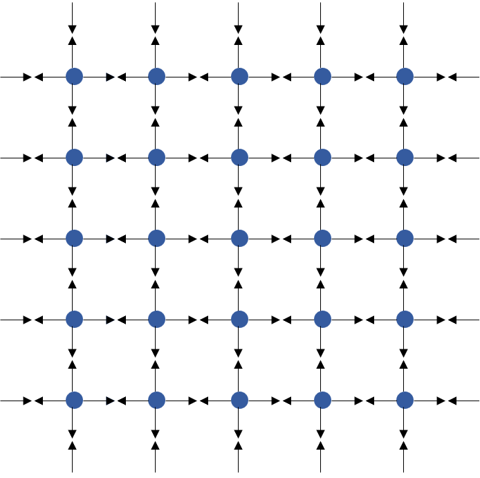Jeder Stoff besteht aus diesen winzigen Teilchen, welche sich in ständiger Bewegung befinden. Je nach Aggregatszustand bewegen sie sich auf unterschiedliche Weisen. Zwischen allen Teilchen wirken anziehende u. abstoßende Kräfte, egal ob mit den Teilchen des selben Stoffs, oder mit anderen.
Diffusion
Durch die ständige Bewegung der einzelnen Teilchen in einem Stoff kann es sein, dass sich zwei verschiedene Stoffe(flüssig oder gasförmig) automatisch vermischen. Diesen Prozess nennt man Diffusion.
Kohäsion und Adhäsion
Wenn sich mehrere Teilchen des selben Stoffs gegenseitig anziehen, nennt man das Kohäsion.
Wenn sich mehrere Teilchen unterschiedlicher Stoffe gegenseitig anziehen, nennt man das Adhäsion.
Aggregatszustände
Es gibt viele verschiedene Aggregatszustände, aber die am häufigsten zu findenden von ihnen sind die Aggregatszustände fest, flüssig, gasförmig. Diese drei unterscheiden sich vor allem in ihem Form- und Volumenverhalten.
| Aggregatszustand | Aufbau | Form | Volumen |
|---|---|---|---|
| fest | Teilchen schwingen um ihren eigenen Platz hin und her | bestimmte Form | bestimmtes Volumen, kann nicht zusammengedrückt werden |
| flüssig | Teilchen bewegen sich unregelmäßig, sind gegeneinander verschiebbar | passt sich der Form des Gefäßes an | bestimmtes Volumen, kann nicht zusammengedrückt werden |
| gasförmig | Teilchen bewegen sich frei im Raum umher | passt sich der Form des Gefäßes an | nimmt den ganzen Raum ein, welcher zur Verfügung steht, lassen sich zusammendrücken --> veränderliches Volumen |
Bewegung von Körpern
Bezugssystem/-körper
Ein Bezugssystem oder ein Bezugskörper ist wichtig um zu bestimmen, ob sich ein Körper bewegt, oder nicht. Wenn er seine Lage gegenüber seines Bezugssystems oder Bezugskörpers ändert, so ist er in Bewegung. Tut er das nicht, so steht er still und bewegt sich nicht.
Model Massepunkt
Das Model Massepunkt wird zur Beschreibung von Bewegungen genutzt. Häufig wird der Masseschwerpunkt zur Darstellung genutzt, also der Punkt, an welchem die ganze Masse eines Körpers aufeinander trifft.

Formen von Bewegungen
Bahnformen:
-
geradlinige Bewegung

-
krummlinige Bewegung

-
Kreisbewegung
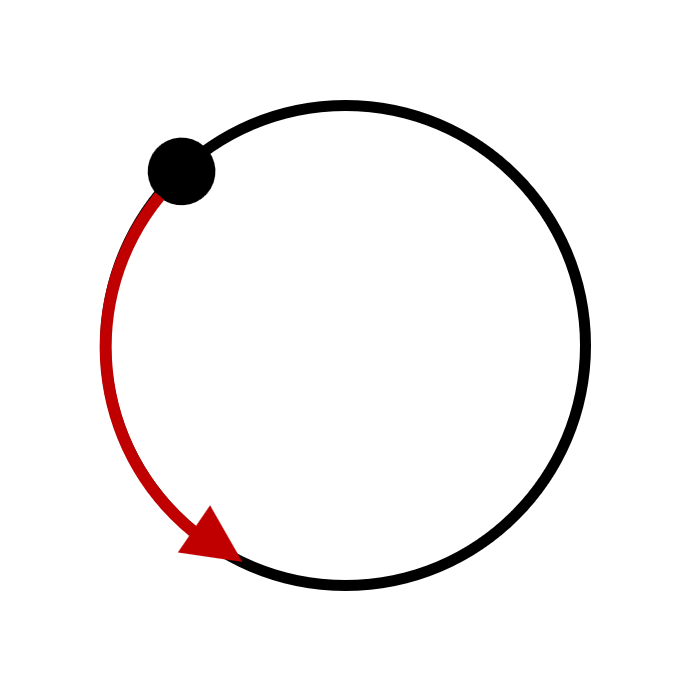 -
Schwingung
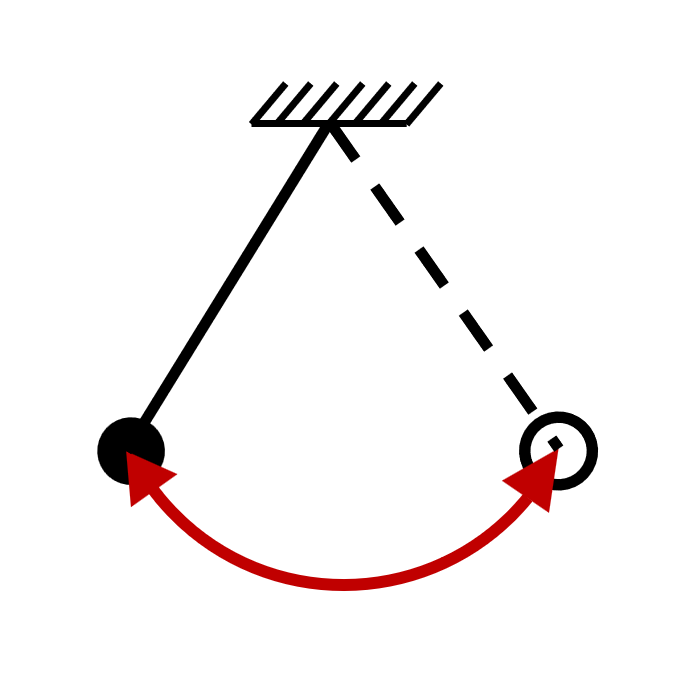
Arten von Bewegungen
| gleichförmige Bewegung | ungleichförmige Bewegung |
|---|---|
| Ein Körper bewegt sich mit konstanter Geschwindigkeit. | Ein Körper bewegt sich mit verändericher Geschwindigkeit. |
Überlagerung von Bewegungen
Bewegungen können sich auch überlagern und damit auch kombinieren. Dies tun sie unabhängig von einander(Unabhängigkeitsprinzip). Man kann die Resultierende Bewegung auch berechnen.
| gleiche Richtung | entgegengesetzte Richtung | im rechten Winkel zueinander | in einem beliebigen anderen Winkel α zueinander |
|---|---|---|---|

v = v1 + v2 |

v = v1 - v2 |

v = √v1¬≤ + v2¬≤ |

v = √v1¬≤ + v2¬≤ + 2 * v1 * v2 * cos α |
Kräfte und ihre Wirkungen
Wirkungen von Kräften
Kräfte können verschiedene Sachen bewirken. Kräfte können die Bewegung und Form eines Körpers verändern.
newtonsche Gesetze
Trägheitsgesetz:
Ein Körper bleibt in Ruhe oder in gleichförmiger geradliniger Bewegung, solange die Summe der auf ihn wirkenden Kräfte null ist.
newtonsches Grundgesetz:
Zwischen Kraft, Masse und Beschleunigng gilt folgender Zusammenhang.
F = m * a
Wechselwirkungsgesetz:
Wirken zwei Körper aufeinander ein, so wirk auf jeden der Körper eine Kraft. Die Kräfte sind gleich groß und entgegengesetzt gerichtet.
Schwerpunkt von Körpern
Jeder Körper besitzt einen Massemittelpunkt/Schwerpunkt(S). An diesen Schwerpunkt greifen alle Kräfte an. Er kann auf verschiedene Weisen ermittelt werden. Bei regelmäßig geformten Körpern befindet er sich in der Körpermitte, doch bei unregelmäßig geformten Körpern kann man ihn experimentell ermitteln:
- man hängt den Körper jeweils an den unkten A,B auf
- man markiert die beiden Lote
- der Schwerpunkt befindet sich an dem Punkt, an welchem sich die Lote treffen

 ermittelt.png)
Standfestigkeit von Körpern
Ein Körper kann sich in verschiedenen Gleichgewichten befinden:
| stabil | labil | nicht im Gleichgewicht |
|---|---|---|
| 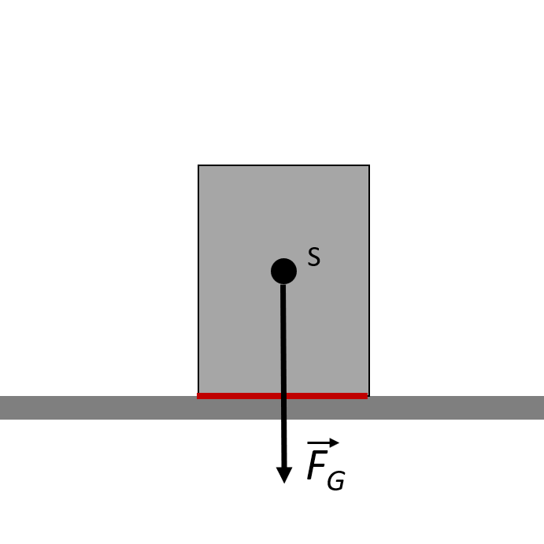 | 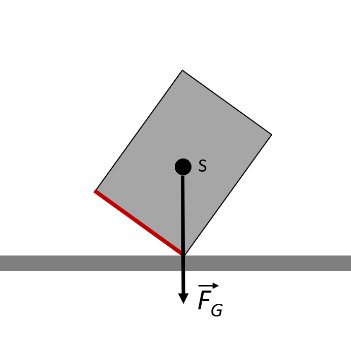 |

|
| Ein Körper steht fest auf seiner Auflagefläche. | Ein Körper kann bei leichtem Anstoßen in eine Richtung kippen. | Ein Körper kippt ohne weitere Kräfte um. |
Überlagerung von Kräften
Kräfte können sich auch überlagern und damit auch kombinieren. Man kann die Resultierende Kraft auch berechnen.
| gleiche Richtung | entgegengesetzte Richtung | im rechten Winkel zueinander | in einem beliebigen anderen Winkel α zueinander |
|---|---|---|---|

F = F1 + F2 |

F = F1 - F2 |

F = √F1¬≤ + F2¬≤ |

F = √F1¬≤ + F2¬≤ + 2 * F1 * F2 * cos α |
Kraftumformende Einrichtungen
Hebel
Es gibt zwei Arten von Hebeln. Die einseitigen und zweiseitigen Hebel.
| einseitig | zweiseitig |
|---|---|

|

|
geneigte Ebenen

Für geneigte Ebenen gelten die Gleichungen:
FH/FG = h/l
FN/FG = b/l
FH/FN = h/b
FH = FG * sin α
FN = FG * cos α
Rollen
Es gibt drei Arten von kraftumformenden Rollen. Diese drei Arten sind die festen und losen Rollen und der Flaschenzug.
| feste Rolle | lose Rolle | Flaschenzug |
|---|---|---|

F1 = F2 |

F1 = (1/2) * F2 |
F1 = (1/n) * F2* |
* Wenn man die Masse der Rollen, Seile und die Reibung vernachlässigen kann.
Goldene Regel der Mechanik
Die goldene Regel der Mechanik sagt:
Was man an Kraft spart, das muss man an Weg zusetzen.
mechanische Schwingungen und Wellen
Schwingungen
Mechanische Schwingungen sind zeitlich periodische Bewegungen eines Körpers um seine Ruhelage. Mit der Zeit ändert sich der Abstand des Körpers zur Ruhelage, seine Geschwindigkeit, seine Beschleunigung und seine potenzielle und kinetische Energie.
Vorraussetzungen für eine Schwingung:
- ein schwingungsfähiger Körper
- eine Auslenkung aus der Ruhelage
- eine rücktreibende Kraft
Arten von Schwingungen:
- harmonische Schwingung(sinusförmige Schwingung)
- nichthormonische Schwingung(nichtsinusförmige Schwingung)
- ungedämpfte Schwingung
- gedämpfte Schwingung
Resonanz
Wird einem schwingenden Körper mit einer Erregerfrequenz und im richtigen Rythmus Energie zugeführt, so kann sich seine Amplitude vergrößern. Dieser Fall wird als Resonanz bezeichnet.
Federschwinger und Fadenpendel
Federschwinger:
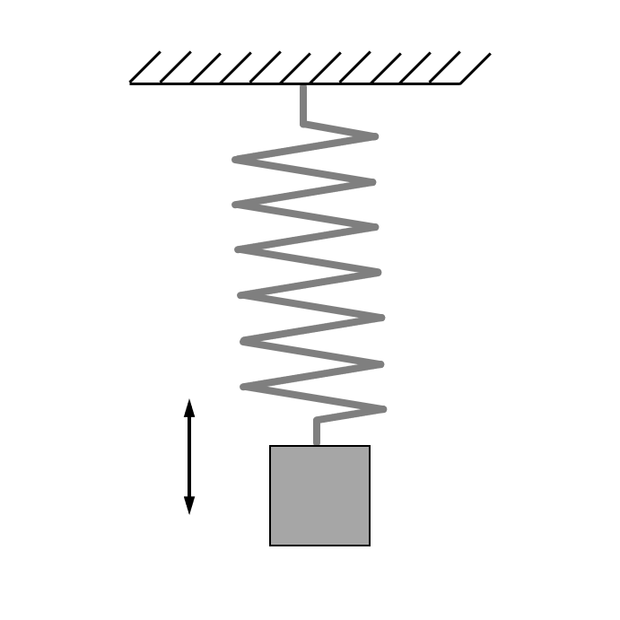Die Schwingdauer eines Federschwingers kann man mit dieser Gleichung berechnen:
T = 2 * œÄ √m/D
Fadenpendel:
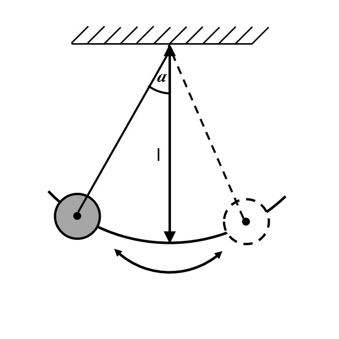Die Schwingdauer eines Fadenpendels kann man mit dieser Gleichung berechnen, wenn die Auslenkung weniger als 15° beträgt:
T = 2 * œÄ √l/g
Wellen
Mechanische Wellen sind die Ausbreitung von Schwingungen im Raum und sie übertragen Energie, aber keine Stoffe. Es gibt zwei Arten von Wellen. Die Längswellen und Querwellen
Längswelle:

Querwelle:
Wellen besitzen eine Ausbreitungsgeschwindigkeit, welche man mit dieser Gleichung berechnen kann:
v = λ * f
Mechanische Wellen können gebeugt, gebrochen und reflektiert werden.
gebeugt:

gebrochen:
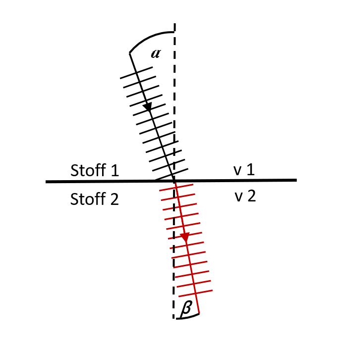reflektiert:
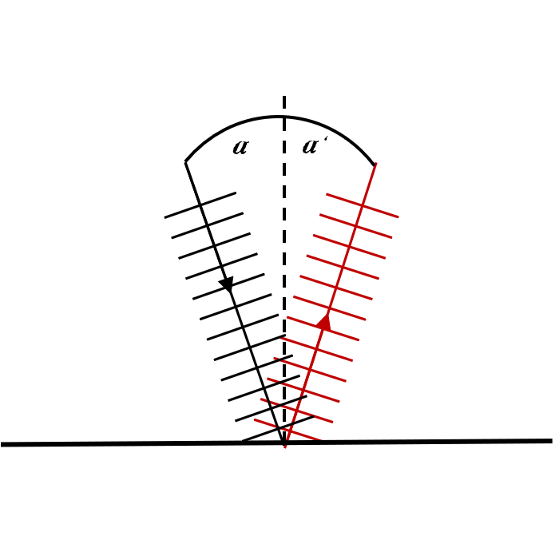Wellen können sich auch überlagern. Die dadurch entstehende Welle(Interferenz) ist die Addition der Ausgangswellen.
Schall
Schall sind mechanische Wellen, die sich als Druckschwankungenin Körpern und Stoffen ausbreiten, also im engeren Sinne alles das, was man mit den Ohren hören kann. Im Durchschnitt können Menschen Frequenzen zwischen 16Hz und 20000Hz wahrnehmen. Alles darunter nennt man Infraschall und alles darüber nennt man Ultraschall. Einige Tiere benutzen Ultraschall, um sich zu orientieren.
Erzeugung von Schall:
Ein Körper muss in Schwingung versetzt werden.
Arten von Schall:
| Ton | Die Schwingung ist sinusförmig. |
| Klang | Die Schwingung ist periodisch, aber nicht sinusförmig. |
| Geräusch | Die Schwingung ist unregelmäßig. |
| Knall | Die Schwingungsamplitude wird mit der Zeit immer kleiner. |
Schall besitzt eine Tonhöhe und eine Lautstärke.
Die Tonhöhe ist davon abhängig, wie schnell ein Körper schwingt. Jegrößer die Frequenz ist, desto höher ist der Ton.
Die Lautstärke ist davon abhängig, mit welcher Amplitude ein Körper schwingt. Je größer die Amplitude der Schwingung eines Körpers ist, umso lauter ist der Ton.
Echolot
Ein Echolot wird zur Messung von Entfernungen durch Schall genutzt. Um die Entfernung zu berechnen kann man diese Gleichung nutzen:
s = (v * t)/2
(v = Schallgeschwindigkeit)
Mechanik der Flüssigkeiten und Gase
hydraulische Anlagen
Hydraulische Anlagen sind kraftumformende Einrichtungen. Beispiele für hydraulische Anlagen sind hydraulische Hebebühnen und Trommelbremsen.
Wie funktionieren sie:
Bei hydraulischen Anlagen wird mit wenig Kraftaufwand eine Flüssigkeit im dünnen Teil der Anlage nach innen gedrückt. Dadurch, dass Flüssigkeiten nicht komprimiert werden können, muss die Flüssigkeit irgendwo anders hinfließen. Dafür besitzt die Anlage einen breiteren Teil, in welchem die Flüssigkeit mit viel Kraft nach außen drückt.

Es gilt:
F1/A1 = F2/A2
Schweredruck in Flüssigkeiten
Da Flüssigkeiten keine interne Struktur besitzen und die einzelnen Atome keinen festen Platz besitzen, drückt nicht die ganze Flüssigkeit in einem Gefäß auf einen Körper, sondern nur der Teil, welcher sich direkt über ihm befindet. Diese Gleichungen gelten für die Berechnung des Schweredrucks:
p = FG/A
p = ϱ * g * h
strömende Flüssigkeiten und Gase
Zur Veranschaulichung von strömenden Flüssigkeiten oder Gasen werden sogenannte Stromlinienbilder verwendet.
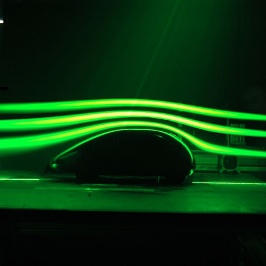Arten von Strömungen:
| laminare Strömungen | turbulente Strömungen |
|---|---|

|

|
Bei allen strömenden Flüssigkeiten und Gasen gilt das Bernoullische Gesetz. Dieses sagt, dass die Dichte des strömenden Stoffes umso kleiner wird, je schneller er fließt.